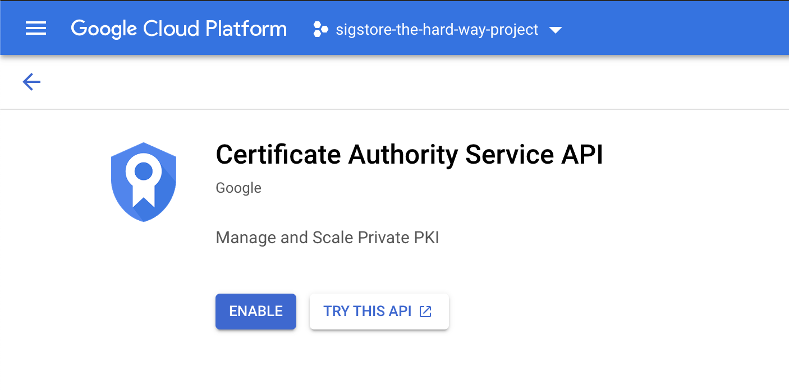
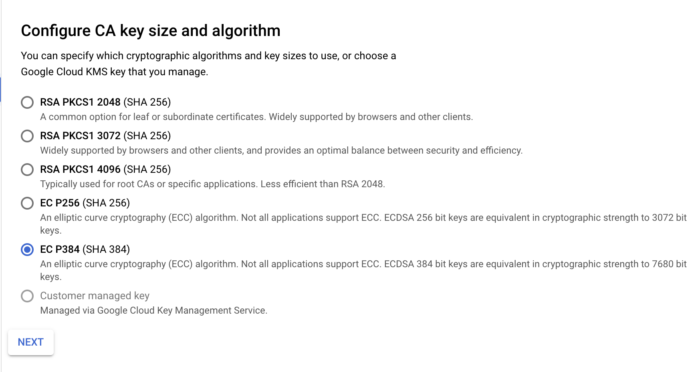
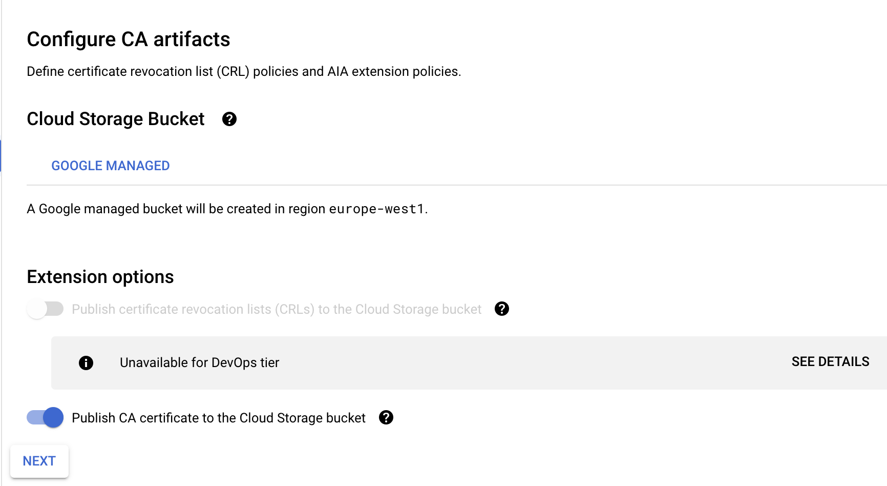
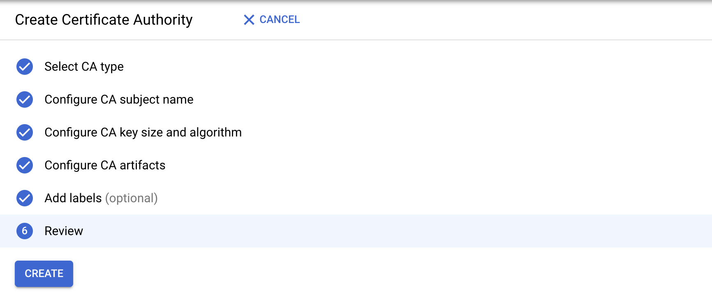

Sigstore the Hard Way
Welcome to sigstore the hard way.
The driver for this project is to get potential users, developers or collaborators familiar with the inner workings of sigstore's infrastructure.
To best achieve a good familiarity with sigstore, we will walk through the whole process manually.
Building "by hand" provides a view of how each component project in sigstore glues together, while deliberately avoiding automation. This means no Dockerfiles or deployment framework playbooks. Everything is set up manually.
With 'sigstore the hard way' we will install, configure and run the following components to provide a 'keyless' signing infrastructure.
- Fulcio WebPKI
- Rekor, signature transparency log and timestamping authority
- Certificate Transparency Log
- Dex, OpenID Connect provider
- Cosign, container (and more) signing and verifying tool
Requirements
This tutorial leverages the GCP for the provisioning of the compute infrastructure required to bootstrap the sigstore infra from the ground up. Free credits are available on Sign up. For when it comes to saving costs, the recommendation is to shutdown any instances when you're not using them and once you have completed the tutorial, delete all the instances, networks etc.
You can of course use local machines if you have them, or any other provider such as AWS, Azure (pull requests welcomed!)
The only other requirement is a domain name, where you have the ability to create some subdomains. We need a domain for an OpenID Connect session (providers don't always like redirect_urls to IP addresses). It's up to you who you use, any provider will do. If you already have a domain, it makes sense to use that. We won't be messing with the root domain if you're already running something there, just creating subdomains (e.g. rekor.example.com, fulcio.example.com)
Certificate Authority
For the Certificate Authority we will have three options to choose from:
- File CA
- SoftHSM
- Google's Certificate Transparency Service
The above are listed in order of setup ease. If you just want to kick the tyres and don't need a secure CA, you can use the File CA.
Google's is a paid service, but easy to set up. SoftHSM is completely free, but requires a little more setup (but nothing too challenging)
Last of all we will sign a container image using cosign.
Copyright
If you have not guessed by name, this is based off, and comes with credit to Kelsey Hightower's Kubernetes the Hard Way

This work is licensed under a Creative Commons Attribution-NonCommercial-ShareAlike 4.0 International License.
Having issues, something not working?
Raise an issue (best option, as others can learn) or message me on the sigstore slack, I'm always happy to help.
Prerequisites
Google Cloud Platform
Install the Google Cloud SDK
Follow the Google Cloud SDK documentation to install and configure the gcloud command line utility.
Verify the Google Cloud SDK version is 338.0.0 or higher:
gcloud version
Set a Default Compute Region and Zone
This tutorial assumes a default compute region and zone have been configured.
If you are using the gcloud command-line tool for the first time init is the easiest way to do this:
gcloud init
gcloud init will give you an opportunity to create a new project and set a zone. If you're going to copy and paste CLI commands then for ease of use name it sigstore-the-hard-way-proj
Be sure to authorize gcloud to access the Cloud Platform with your Google user credentials:
gcloud auth login
Next set a default compute region and compute zone:
gcloud config set compute/region europe-west1
Set a default compute zone:
gcloud config set compute/zone europe-west1-b
📝 Use the
gcloud compute zones listcommand to view additional regions and zones.
Provisioning Compute / Network Resources
Network Resources
We next need to create a network for our compute resources
gcloud compute networks create sigstore-the-hard-way-proj --subnet-mode custom
📝 if you recieve an
reason: UREQ_PROJECT_BILLING_NOT_FOUNDerror. You need to enable billing on the API
We can now create a subnet with an internal range
gcloud compute networks subnets create sigstore \
--network sigstore-the-hard-way-proj \
--range 10.240.0.0/24
Create some firewall rules to allow tcp, udp and icmp protocols
gcloud compute firewall-rules create sigstore-the-hard-way-proj-allow-internal \
--allow tcp,udp,icmp \
--network sigstore-the-hard-way-proj \
--source-ranges 10.240.0.0/24
gcloud compute firewall-rules create sigstore-the-hard-way-allow-external \
--allow tcp:22,tcp:80,tcp:443,icmp \
--network sigstore-the-hard-way-proj \
--source-ranges 0.0.0.0/0
To verify the rules were created run the following command:
gcloud compute firewall-rules list --filter="network:sigstore-the-hard-way-proj"
You should see an output similar to the following:
NAME NETWORK DIRECTION PRIORITY ALLOW DENY DISABLED
sigstore-the-hard-way-allow-external sigstore-the-hard-way-proj INGRESS 1000 tcp:22,tcp:80,tcp:443,icmp False
sigstore-the-hard-way-proj-allow-internal sigstore-the-hard-way-proj INGRESS 1000 tcp,udp,icmp False
Compute Resources
Now we need to create four compute nodes for each service.
gcloud compute instances create sigstore-rekor \
--async \
--boot-disk-size 200GB \
--image-family debian-10 \
--image-project debian-cloud \
--machine-type e2-small \
--private-network-ip 10.240.0.10 \
--scopes compute-rw,storage-ro,service-management,service-control,logging-write,monitoring \
--subnet sigstore \
--tags sigstore-the-hard-way-proj,sigstore-rekor
gcloud compute instances create sigstore-fulcio \
--async \
--boot-disk-size 200GB \
--image-family debian-10 \
--image-project debian-cloud \
--machine-type e2-small \
--private-network-ip 10.240.0.11 \
--scopes compute-rw,storage-ro,service-management,service-control,logging-write,monitoring \
--subnet sigstore \
--tags sigstore-the-hard-way-proj,sigstore-fulcio
gcloud compute instances create sigstore-oauth2 \
--async \
--boot-disk-size 200GB \
--image-family debian-10 \
--image-project debian-cloud \
--machine-type e2-small \
--private-network-ip 10.240.0.12 \
--scopes compute-rw,storage-ro,service-management,service-control,logging-write,monitoring \
--subnet sigstore \
--tags sigstore-the-hard-way-proj,sigstore-oauth2
gcloud compute instances create sigstore-ctl \
--async \
--boot-disk-size 200GB \
--image-family debian-10 \
--image-project debian-cloud \
--machine-type e2-small \
--private-network-ip 10.240.0.13 \
--scopes compute-rw,storage-ro,service-management,service-control,logging-write,monitoring \
--subnet sigstore \
--tags sigstore-the-hard-way-proj,sigstore-ctl
Verify all compute instances are in a RUNNING state.
gcloud compute instances list --filter="tags.items=sigstore-the-hard-way-proj"
The output should be as follows:
NAME ZONE MACHINE_TYPE PREEMPTIBLE INTERNAL_IP EXTERNAL_IP STATUS
sigstore-ctl europe-west1-c e2-small 10.240.0.13 35.241.198.188 RUNNING
sigstore-fulcio europe-west1-c e2-small 10.240.0.11 35.241.201.91 RUNNING
sigstore-oauth2 europe-west1-c e2-small 10.240.0.12 35.240.60.139 RUNNING
sigstore-rekor europe-west1-c e2-small 10.240.0.10 35.233.82.12 RUNNING
Domain configuration
Now that are instances are running, lets grab the external IP's and set up domains.
📝 A cheap temp domain can be grabbed from Google Cloud Domains. Just type in random, nonsensical string and you should easily be able to get a domain for $1. There are also lots of other providers. Use whatever works for you.
Configuration
Export a variable that will point to the domain you just bought. In this example we'll be using example.com:
export DOMAIN="example.com"
We'll be using this variable throughout the following code-snippets.
rekor.example.com
Grab your external / public IP
gcloud compute instances describe sigstore-rekor \
--format='get(networkInterfaces[0].accessConfigs[0].natIP)'
You now want to make an "A Record" to a subdomain or "rekor" and to your external IP from the above command
To create resource records on Google,
- Go to Google Domains
- Click on your domain from the homepage
- DNS > Manage Custom Records
If you're using GCP as the DNS provider this can be done as follows
gcloud dns record-sets create rekor.$DOMAIN. \
--rrdatas=$(gcloud compute instances describe sigstore-rekor --format='get(networkInterfaces[0].accessConfigs[0].natIP)') \
--type=A --ttl=60 --zone=example-com
| Type | Host | Value |
|---|---|---|
| A Record | rekor | x.x.x.x |
fulcio.example.com
Now repeat the same for fulcio, and dex
gcloud compute instances describe sigstore-fulcio \
--format='get(networkInterfaces[0].accessConfigs[0].natIP)'
If you're using GCP as the DNS provider this can be done as follows
gcloud dns record-sets create fulcio.$DOMAIN. \
--rrdatas=$(gcloud compute instances describe sigstore-fulcio --format='get(networkInterfaces[0].accessConfigs[0].natIP)') \
--type=A --ttl=60 --zone=example-com
| Type | Host | Value |
|---|---|---|
| A Record | fulcio | x.x.x.x |
oauth2.example.com
gcloud compute instances describe sigstore-oauth2 \
--format='get(networkInterfaces[0].accessConfigs[0].natIP)'
If you're using GCP as the DNS provider this can be done as follows
gcloud dns record-sets create oauth2.$DOMAIN. \
--rrdatas=$(gcloud compute instances describe sigstore-oauth2 --format='get(networkInterfaces[0].accessConfigs[0].natIP)') \
--type=A --ttl=60 --zone=example-com
| Type | Host | Value |
|---|---|---|
| A Record | oauth2 | x.x.x.x |
📝 We do not need a domain for the certificate transparency log. This only communicate over a private network to Fulcio.
rekor
Rekor is sigstores signature transparency log.
Rekor requires running instances of trillian's log server and signer, with a database backend. A few different databases can be used by trillian, for this example we will use mariadb.
Let's start by logging in
gcloud compute ssh sigstore-rekor
Dependencies
We need a few dependencies installed
Update your system
sudo apt-get update -y
If you want to save up some time, remove man-db first
sudo apt-get remove -y --purge man-db
Grab the following packages
sudo apt-get install mariadb-server git redis-server haproxy certbot -y
📝 redis-server is optional, but useful for a quick indexed search should you decide you need it. If you don't install it, you need to start rekor with
--enable_retrieve_api=false
Install latest golang compiler
Download and run the golang installer (system package is not yet 1.16)
curl -O https://storage.googleapis.com/golang/getgo/installer_linux
chmod +x installer_linux
./installer_linux
e.g.
Welcome to the Go installer!
Downloading Go version go1.17.1 to /home/luke/.go
This may take a bit of time...
Downloaded!
Setting up GOPATH
GOPATH has been set up!
One more thing! Run `source /home/$USER/.bash_profile` to persist the
new environment variables to your current session, or open a
new shell prompt.
As suggested run
source /home/$USER/.bash_profile
go version
go version go1.17.1 linux/amd64
Install rekor
We will work with the rekor repo (we grab the whole repo as we will need a some scripts)
mkdir -p ~/go/src/github.com/sigstore && cd "$_"
git clone https://github.com/sigstore/rekor.git && cd rekor/
And let's install both the server and the CLI
go build -o rekor-cli ./cmd/rekor-cli
sudo mv rekor-cli /usr/local/bin/
go build -o rekor-server ./cmd/rekor-server
sudo mv rekor-server /usr/local/bin/
Database
Trillian requires a database, let's first run mysql_secure_installation to
remove test accounts etc.
sudo mysql_secure_installation
NOTE: RUNNING ALL PARTS OF THIS SCRIPT IS RECOMMENDED FOR ALL MariaDB
SERVERS IN PRODUCTION USE! PLEASE READ EACH STEP CAREFULLY!
In order to log into MariaDB to secure it, we'll need the current
password for the root user. If you've just installed MariaDB, and
you haven't set the root password yet, the password will be blank,
so you should just press enter here.
Enter current password for root (enter for none):
OK, successfully used password, moving on...
Setting the root password ensures that nobody can log into the MariaDB
root user without the proper authorisation.
Set root password? [Y/n] n
... skipping.
By default, a MariaDB installation has an anonymous user, allowing anyone
to log into MariaDB without having to have a user account created for
them. This is intended only for testing, and to make the installation
go a bit smoother. You should remove them before moving into a
production environment.
Remove anonymous users? [Y/n] Y
... Success!
Normally, root should only be allowed to connect from 'localhost'. This
ensures that someone cannot guess at the root password from the network.
Disallow root login remotely? [Y/n] Y
... Success!
By default, MariaDB comes with a database named 'test' that anyone can
access. This is also intended only for testing, and should be removed
before moving into a production environment.
Remove test database and access to it? [Y/n] Y
- Dropping test database...
... Success!
- Removing privileges on test database...
... Success!
Reloading the privilege tables will ensure that all changes made so far
will take effect immediately.
Reload privilege tables now? [Y/n] Y
... Success!
Cleaning up...
All done! If you've completed all of the above steps, your MariaDB
installation should now be secure.
Thanks for using MariaDB!
We can now build the database
Within the rekor repository is a scripts/createdb.sh script.
Edit this script and populate the root password ROOTPASS you set for the system
and then run the script (leave blank if not)
cd scripts/
sudo ./createdb.sh
Creating test database and test user account
Loading table data..
Install trillian components
go install github.com/google/trillian/cmd/trillian_log_server@v1.3.14-0.20210713114448-df474653733c
sudo mv ~/go/bin/trillian_log_server /usr/local/bin/
go install github.com/google/trillian/cmd/trillian_log_signer@v1.3.14-0.20210713114448-df474653733c
sudo mv ~/go/bin/trillian_log_signer /usr/local/bin/
Run trillian
The following are best run in two terminals, which are then left open (this helps for debugging)
trillian_log_server -http_endpoint=localhost:8090 -rpc_endpoint=localhost:8091 --logtostderr ...
trillian_log_signer --logtostderr --force_master --http_endpoint=localhost:8190 -rpc_endpoint=localhost:8191 --batch_size=1000 --sequencer_guard_window=0 --sequencer_interval=200ms
Alternatively, create bare minimal systemd services
cat /etc/systemd/system/trillian_log_server.service
[Unit]
Description=trillian_log_server
After=network-online.target
Wants=network-online.target
StartLimitIntervalSec=600
StartLimitBurst=5
[Service]
ExecStart=/usr/local/bin/trillian_log_server -http_endpoint=localhost:8090 -rpc_endpoint=localhost:8091 --logtostderr ...
Restart=on-failure
RestartSec=5s
[Install]
WantedBy=multi-user.target
cat /etc/systemd/system/trillian_log_signer.service
[Unit]
Description=trillian_log_signer
After=network-online.target
Wants=network-online.target
StartLimitIntervalSec=600
StartLimitBurst=5
[Service]
ExecStart=/usr/local/bin/trillian_log_signer --logtostderr --force_master --http_endpoint=localhost:8190 -rpc_endpoint=localhost:8191 --batch_size=1000 --sequencer_guard_window=0 --sequencer_interval=200ms
Restart=on-failure
RestartSec=5s
[Install]
WantedBy=multi-user.target
Enable systemd services
sudo systemctl daemon-reload
sudo systemctl enable trillian_log_server.service
Created symlink /etc/systemd/system/multi-user.target.wants/trillian_log_server.service → /etc/systemd/system/trillian_log_server.service.
sudo systemctl start trillian_log_server.service
sudo systemctl status trillian_log_server.service
● trillian_log_server.service - trillian_log_server
Loaded: loaded (/etc/systemd/system/trillian_log_server.service; enabled; vendor preset: enabled)
Active: active (running) since Thu 2021-09-30 17:41:49 UTC; 8s ago
sudo systemctl enable trillian_log_signer.service
Created symlink /etc/systemd/system/multi-user.target.wants/trillian_log_signer.service → /etc/systemd/system/trillian_log_signer.service.
sudo systemctl start trillian_log_signer.service
sudo systemctl status trillian_log_signer.service
● trillian_log_signer.service - trillian_log_signer
Loaded: loaded (/etc/systemd/system/trillian_log_signer.service; enabled; vendor preset: enabled)
Active: active (running) since Thu 2021-09-30 17:42:05 UTC; 12s ago
Start rekor
Start rekor
rekor-server serve --rekor_server.address=0.0.0.0 --trillian_log_server.port=8091
Note: Rekor runs on port 3000 on all interfaces by default
Alternatively, you may create a bare minimal systemd service similar to trillian above
cat /etc/systemd/system/rekor.service
[Unit]
Description=rekor
After=network-online.target
Wants=network-online.target
StartLimitIntervalSec=600
StartLimitBurst=5
[Service]
ExecStart=/usr/local/bin/rekor-server serve --rekor_server.address=0.0.0.0 --trillian_log_server.port=8091
Restart=on-failure
RestartSec=5s
[Install]
WantedBy=multi-user.target
sudo systemctl daemon-reload
sudo systemctl enable rekor.service
sudo systemctl start rekor.service
sudo systemctl status rekor.service
Let's encrypt (TLS) & HA Proxy config
Let's create a HAProxy config, set DOMAIN to your registered domain and your
private IP address.
DOMAIN="rekor.example.com"
IP="10.240.0.10"
Let's now run certbot to obtain our TLS certs.
sudo certbot certonly --standalone --preferred-challenges http \
--http-01-address ${IP} --http-01-port 80 -d ${DOMAIN} \
--non-interactive --agree-tos --email youremail@domain.com
Move the PEM chain into place
sudo cat "/etc/letsencrypt/live/${DOMAIN}/fullchain.pem" \
"/etc/letsencrypt/live/${DOMAIN}/privkey.pem" \
| sudo tee "/etc/ssl/private/${DOMAIN}.pem" > /dev/null
Now we need to change certbot configuration for automatic renewal
Prepare post renewal script
cat /etc/letsencrypt/renewal-hooks/post/haproxy-ssl-renew.sh
#!/bin/bash
DOMAIN="rekor.example.com"
cat "/etc/letsencrypt/live/${DOMAIN}/fullchain.pem" \
"/etc/letsencrypt/live/${DOMAIN}/privkey.pem" \
> "/etc/ssl/private/${DOMAIN}.pem"
systemctl reload haproxy.service
Make sure the script has executable flag set
sudo chmod +x /etc/letsencrypt/renewal-hooks/post/haproxy-ssl-renew.sh
Replace port and address in the certbot's renewal configuration file for the domain (pass ACME request through the haproxy to certbot)
ls -l /etc/letsencrypt/renewal/rekor.example.com.conf
http01_port = 9080
http01_address = 127.0.0.1
Append new line
post_hook = /etc/letsencrypt/renewal-hooks/post/haproxy-ssl-renew.sh
Prepare haproxy configuration
cat > haproxy.cfg <<EOF
defaults
timeout connect 10s
timeout client 30s
timeout server 30s
log global
mode http
option httplog
maxconn 3000
log 127.0.0.1 local0
frontend haproxy
#public IP address
bind ${IP}:80
bind ${IP}:443 ssl crt /etc/ssl/private/${DOMAIN}.pem
# HTTPS redirect
redirect scheme https code 301 if !{ ssl_fc }
acl letsencrypt-acl path_beg /.well-known/acme-challenge/
use_backend letsencrypt-backend if letsencrypt-acl
default_backend sigstore_rekor
backend sigstore_rekor
server sigstore_rekor_internal ${IP}:3000
backend letsencrypt-backend
server certbot_internal 127.0.0.1:9080
EOF
Inspect the resulting haproxy.cfg and make sure everything looks correct.
If so, move it into place
sudo mv haproxy.cfg /etc/haproxy/
Check syntax
sudo /usr/sbin/haproxy -c -V -f /etc/haproxy/haproxy.cfg
Start HAProxy
Let's now start HAProxy
sudo systemctl enable haproxy.service
Synchronizing state of haproxy.service with SysV service script with /lib/systemd/systemd-sysv-install.
Executing: /lib/systemd/systemd-sysv-install enable haproxy
sudo systemctl restart haproxy.service
sudo systemctl status haproxy.service
● haproxy.service - HAProxy Load Balancer
Loaded: loaded (/lib/systemd/system/haproxy.service; enabled; vendor preset: enabled)
Active: active (running) since Sun 2021-07-18 10:12:28 UTC; 58min ago
Docs: man:haproxy(1)
file:/usr/share/doc/haproxy/configuration.txt.gz
Main PID: 439 (haproxy)
Tasks: 2 (limit: 2322)
Memory: 4.1M
CGroup: /system.slice/haproxy.service
├─439 /usr/sbin/haproxy -Ws -f /etc/haproxy/haproxy.cfg -p /run/haproxy.pid
└─444 /usr/sbin/haproxy -Ws -f /etc/haproxy/haproxy.cfg -p /run/haproxy.pid
Jul 18 10:12:27 sigstore-fulcio systemd[1]: Starting HAProxy Load Balancer...
Jul 18 10:12:28 sigstore-fulcio systemd[1]: Started HAProxy Load Balancer.
Test automatic renewal
sudo certbot renew --dry-run
Test rekor
Now we will test the operation of rekor. From the rekor repository (so we have some test files) we can perform an inclusion by adding some signing materials
rekor-cli upload --artifact tests/test_file.txt --public-key tests/test_public_key.key --signature tests/test_file.sig --rekor_server http://127.0.0.1:3000
Example:
rekor-cli upload --artifact tests/test_file.txt --public-key tests/test_public_key.key --signature tests/test_file.sig --rekor_server http://127.0.0.1:3000
Created entry at index 0, available at: http://127.0.0.1:3000/api/v1/log/entries/b08416d417acdb0610d4a030d8f697f9d0a718024681a00fa0b9ba67072a38b5
Dex
Dex is the solution used for handling OpenID connect sessions.
A user first connects to a dex instance where an OpenID session is invoked.
The user then authorises Fulcio to request the users email address as part of an OpenID scope. This email address is then recored into the x509 signing certificates
Connect to the compute instance
gcloud compute ssh sigstore-oauth2
Dependencies
sudo apt-get update -y
If you want to save up some time, remove man-db first
sudo apt-get remove -y --purge man-db
sudo apt-get install haproxy make git gcc certbot -y
Install latest golang compiler
Download and run the golang installer (system package is not yet 1.16)
curl -O https://storage.googleapis.com/golang/getgo/installer_linux
chmod +x installer_linux
./installer_linux
e.g.
Welcome to the Go installer!
Downloading Go version go1.17.1 to /home/luke/.go
This may take a bit of time...
Downloaded!
Setting up GOPATH
GOPATH has been set up!
One more thing! Run `source /home/$USER/.bash_profile` to persist the
new environment variables to your current session, or open a
new shell prompt.
As suggested run
source /home/$USER/.bash_profile
go version
go version go1.17.1 linux/amd64
Let's encrypt (TLS) & HA Proxy config
Let's create a HAProxy config, set DOMAIN to your registered domain and your
private IP address
DOMAIN="oauth2.yourdomain.com"
IP="10.240.0.12"
Let's now run certbot to obtain our TLS certs.
sudo certbot certonly --standalone --preferred-challenges http \
--http-01-address ${IP} --http-01-port 80 -d ${DOMAIN} \
--non-interactive --agree-tos --email youremail@domain.com
Move the PEM chain into place
sudo cat "/etc/letsencrypt/live/${DOMAIN}/fullchain.pem" \
"/etc/letsencrypt/live/${DOMAIN}/privkey.pem" \
| sudo tee "/etc/ssl/private/${DOMAIN}.pem" > /dev/null
Now we need to change certbot configuration for automatic renewal
Prepare post renewal script
cat /etc/letsencrypt/renewal-hooks/post/haproxy-ssl-renew.sh
#!/bin/bash
DOMAIN="oauth2.example.com"
cat "/etc/letsencrypt/live/${DOMAIN}/fullchain.pem" \
"/etc/letsencrypt/live/${DOMAIN}/privkey.pem" \
> "/etc/ssl/private/${DOMAIN}.pem"
systemctl reload haproxy.service
Make sure the script has executable flag set
sudo chmod +x /etc/letsencrypt/renewal-hooks/post/haproxy-ssl-renew.sh
Replace port and address in the certbot's renewal configuration file for the domain (pass ACME request through the haproxy to certbot)
ls -l /etc/letsencrypt/renewal/oauth2.example.com.conf
http01_port = 9080
http01_address = 127.0.0.1
Append new line
post_hook = /etc/letsencrypt/renewal-hooks/post/haproxy-ssl-renew.sh
Prepare haproxy configuration
cat > haproxy.cfg <<EOF
defaults
timeout connect 10s
timeout client 30s
timeout server 30s
log global
mode http
option httplog
maxconn 3000
log 127.0.0.1 local0
frontend haproxy
#public IP address
bind ${IP}:80
bind ${IP}:443 ssl crt /etc/ssl/private/${DOMAIN}.pem
# HTTPS redirect
redirect scheme https code 301 if !{ ssl_fc }
acl letsencrypt-acl path_beg /.well-known/acme-challenge/
use_backend letsencrypt-backend if letsencrypt-acl
default_backend sigstore_dex
backend sigstore_dex
server sigstore_oauth2_internal ${IP}:6000
backend letsencrypt-backend
server certbot_internal 127.0.0.1:9080
EOF
Inspect the resulting haproxy.cfg and make sure everything looks correct.
If so, move it into place
sudo mv haproxy.cfg /etc/haproxy/
Check syntax
sudo /usr/sbin/haproxy -c -V -f /etc/haproxy/haproxy.cfg
Start HAProxy
Let's now start HAProxy
sudo systemctl enable haproxy.service
Synchronizing state of haproxy.service with SysV service script with /lib/systemd/systemd-sysv-install.
Executing: /lib/systemd/systemd-sysv-install enable haproxy
sudo systemctl restart haproxy.service
sudo systemctl status haproxy.service
● haproxy.service - HAProxy Load Balancer
Loaded: loaded (/lib/systemd/system/haproxy.service; enabled; vendor preset: enabled)
Active: active (running) since Sun 2021-07-18 10:12:28 UTC; 58min ago
Docs: man:haproxy(1)
file:/usr/share/doc/haproxy/configuration.txt.gz
Main PID: 439 (haproxy)
Tasks: 2 (limit: 2322)
Memory: 4.1M
CGroup: /system.slice/haproxy.service
├─439 /usr/sbin/haproxy -Ws -f /etc/haproxy/haproxy.cfg -p /run/haproxy.pid
└─444 /usr/sbin/haproxy -Ws -f /etc/haproxy/haproxy.cfg -p /run/haproxy.pid
Jul 18 10:12:27 sigstore-fulcio systemd[1]: Starting HAProxy Load Balancer...
Jul 18 10:12:28 sigstore-fulcio systemd[1]: Started HAProxy Load Balancer.
Test automatic renewal
sudo certbot renew --dry-run
Install Dex
mkdir -p ~/go/src/github.com/dexidp/ && cd "$_"
git clone https://github.com/dexidp/dex.git
cd dex
make build
sudo mv bin/dex /usr/local/bin/
Obtain Google OAUTH credentials
📝 We re using Google here, you can do the same for github and microsoft too. The placeholders are already within
config.yaml
-
Head to the credentials page
-
Select 'CONFIGURE CONSENT SCREEN'
Select 'Internal'

NOTE: If you're not a Google Workspace user, the 'Internal' option will not be available. You can only make your app available to external (general audience) users only. In such a case, the 'External' User Type works fine as well.
Fill out the app registration details

-
Set scopes
Select 'ADD OR REMOVE SCOPES' and set the
userinfo.emailscope
Select "SAVE AND CONTINUE"
Select "BACK TO DASHBOARD" and select 'Credentials'
-
Create OAuth Client ID

Select "OAuth client ID". Select "Web Application" and fill out the "Authorized Redirect URIs"
Select "CREATE"

-
Note down tour Client ID and Secret and keep them safe (we will need them for dex)
Configure Dex
Set up the configuration file for dex.
Provide saved OIDC details as variables
GOOGLE_CLIENT_ID="..."
GOOGLE_CLIENT_SECRET="..."
cat > dex-config.yaml <<EOF
issuer: https://${DOMAIN}/auth
storage:
type: sqlite3
config:
file: /var/dex/dex.db
web:
http: 0.0.0.0:5556
frontend:
issuer: sigstore
theme: light
# Configuration for telemetry
telemetry:
http: 0.0.0.0:5558
# Options for controlling the logger.
logger:
level: "debug"
format: "json"
# Default values shown below
oauth2:
responseTypes: [ "code" ]
skipApprovalScreen: false
alwaysShowLoginScreen: true
staticClients:
- id: sigstore
public: true
name: 'sigstore'
redirectURI: https://${DOMAIN}/auth/callback
connectors:
- type: google
id: google-sigstore-test
name: Google
config:
clientID: $GOOGLE_CLIENT_ID
clientSecret: $GOOGLE_CLIENT_SECRET
redirectURI: https://${DOMAIN}/auth/callback
#- type: microsoft
# id: microsoft-sigstore-test
# name: Microsoft
# config:
# clientID: $MSFT_CLIENT_ID
# clientSecret: $MSFT_CLIENT_SECRET
# redirectURI: https://${DOMAIN}/auth/callback
#- type: github
# id: github-sigstore-test
# name: GitHub
# config:
# clientID: $GITHUB_CLIENT_ID
# clientSecret: $GITHUB_CLIENT_SECRET
# redirectURI: https://${DOMAIN}/auth/callback
EOF
Move configuration file
sudo mkdir -p /var/dex/
sudo mkdir -p /etc/dex/
sudo mv dex-config.yaml /etc/dex/
Start dex
dex serve --web-http-addr=0.0.0.0:6000 dex-config.yaml
You may create a bare minimal systemd service for dex
cat /etc/systemd/system/dex.service
[Unit]
Description=dex
After=network-online.target
Wants=network-online.target
StartLimitIntervalSec=600
StartLimitBurst=5
[Service]
ExecStart=/usr/local/bin/dex serve --web-http-addr=0.0.0.0:6000 /etc/dex/dex-config.yaml
Restart=on-failure
RestartSec=5s
[Install]
WantedBy=multi-user.target
sudo systemctl daemon-reload
sudo systemctl enable dex.service
sudo systemctl start dex.service
sudo systemctl status dex.service
Fulcio
Now it's time to install the Fulcio WebPKI.
Fulcio requires a means to manage certificates. We have two options here, we can use a SoftHSM or Google Certificate Authority service.
📝 As of time of writing, plans are in place to support AWS Cloud HSM and Azure Dedicated HSM.
SSH into the Fulcio Compute instance
gcloud compute ssh sigstore-fulcio
Dependencies
We need a few dependencies installed
Update your system
sudo apt-get update -y
If you want to save up some time, remove man-db first
sudo apt-get remove -y --purge man-db
Grab the following packages
sudo apt-get install git gcc haproxy softhsm certbot opensc -y
📝 If you plan to use GCP Certificate Service, you can drop SoftHSM and opensc
Install latest golang compiler
Download and run the golang installer (system package is not yet 1.16)
curl -O https://storage.googleapis.com/golang/getgo/installer_linux
chmod +x installer_linux
./installer_linux
e.g.
Welcome to the Go installer!
Downloading Go version go1.17.1 to /home/luke/.go
This may take a bit of time...
Downloaded!
Setting up GOPATH
GOPATH has been set up!
One more thing! Run `source /home/$USER/.bash_profile` to persist the
new environment variables to your current session, or open a
new shell prompt.
As suggested run
source /home/$USER/.bash_profile
go version
go version go1.17.1 linux/amd64
Install Fulcio
go install github.com/sigstore/fulcio@v0.5.2
sudo mv ~/go/bin/fulcio /usr/local/bin/
Let's encrypt (TLS) & HA Proxy config
Let's create a HAProxy config, set DOMAIN to your registered domain and your
private IP address
DOMAIN="fulcio.yourdomain.com"
IP="10.240.0.11"
Let's now run certbot to obtain our TLS certs.
sudo certbot certonly --standalone --preferred-challenges http \
--http-01-address ${IP} --http-01-port 80 -d ${DOMAIN} \
--non-interactive --agree-tos --email youremail@domain.com
Move the PEM chain into place
sudo cat "/etc/letsencrypt/live/${DOMAIN}/fullchain.pem" \
"/etc/letsencrypt/live/${DOMAIN}/privkey.pem" \
| sudo tee "/etc/ssl/private/${DOMAIN}.pem" > /dev/null
Now we need to change certbot configuration for automatic renewal
Prepare post renewal script
cat /etc/letsencrypt/renewal-hooks/post/haproxy-ssl-renew.sh
#!/bin/bash
DOMAIN="fulcio.example.com"
cat "/etc/letsencrypt/live/${DOMAIN}/fullchain.pem" \
"/etc/letsencrypt/live/${DOMAIN}/privkey.pem" \
> "/etc/ssl/private/${DOMAIN}.pem"
systemctl reload haproxy.service
Make sure the script has executable flag set
sudo chmod +x /etc/letsencrypt/renewal-hooks/post/haproxy-ssl-renew.sh
Replace port and address in the certbot's renewal configuration file for the domain (pass ACME request through the haproxy to certbot)
ls -l /etc/letsencrypt/renewal/fulcio.example.com.conf
http01_port = 9080
http01_address = 127.0.0.1
Append new line
post_hook = /etc/letsencrypt/renewal-hooks/post/haproxy-ssl-renew.sh
Prepare haproxy configuration
cat > haproxy.cfg <<EOF
defaults
timeout connect 10s
timeout client 30s
timeout server 30s
log global
mode http
option httplog
maxconn 3000
log 127.0.0.1 local0
frontend haproxy
#public IP address
bind ${IP}:80
bind ${IP}:443 ssl crt /etc/ssl/private/${DOMAIN}.pem
# HTTPS redirect
redirect scheme https code 301 if !{ ssl_fc }
acl letsencrypt-acl path_beg /.well-known/acme-challenge/
use_backend letsencrypt-backend if letsencrypt-acl
default_backend sigstore_fulcio
backend sigstore_fulcio
server sigstore_fulcio_internal 0.0.0.0:5000
backend letsencrypt-backend
server certbot_internal 127.0.0.1:9080
EOF
Inspect the resulting haproxy.cfg and make sure everything looks correct.
If so, move it into place
sudo mv haproxy.cfg /etc/haproxy/
Check syntax
sudo /usr/sbin/haproxy -c -V -f /etc/haproxy/haproxy.cfg
Start HAProxy
Let's now start HAProxy
sudo systemctl enable haproxy.service
Synchronizing state of haproxy.service with SysV service script with /lib/systemd/systemd-sysv-install.
Executing: /lib/systemd/systemd-sysv-install enable haproxy
sudo systemctl restart haproxy.service
sudo systemctl status haproxy.service
● haproxy.service - HAProxy Load Balancer
Loaded: loaded (/lib/systemd/system/haproxy.service; enabled; vendor preset: enabled)
Active: active (running) since Sun 2021-07-18 10:12:28 UTC; 58min ago
Docs: man:haproxy(1)
file:/usr/share/doc/haproxy/configuration.txt.gz
Main PID: 439 (haproxy)
Tasks: 2 (limit: 2322)
Memory: 4.1M
CGroup: /system.slice/haproxy.service
├─439 /usr/sbin/haproxy -Ws -f /etc/haproxy/haproxy.cfg -p /run/haproxy.pid
└─444 /usr/sbin/haproxy -Ws -f /etc/haproxy/haproxy.cfg -p /run/haproxy.pid
Jul 18 10:12:27 sigstore-fulcio systemd[1]: Starting HAProxy Load Balancer...
Jul 18 10:12:28 sigstore-fulcio systemd[1]: Started HAProxy Load Balancer.
Test automatic renewal
sudo certbot renew --dry-run
File CA setup
First we need to generate some keys and a root CA
openssl ecparam -genkey -name prime256v1 -noout -out unenc.key
openssl ec -in unenc.key -out file_ca_key.pem -des
openssl ec -in file_ca_key.pem -pubout -out file_ca_pub.pem
openssl req -new -x509 -days 365 -extensions v3_ca -key file_ca_key.pem -out fulcio-root.pem
rm unenc.key
Copy all of the above key artifacts into $HOME/fulcio-config/config
Note You will need the file_ca_pub.pem file for the TUF root of cosign, with the sign-container section towards the end
SoftHSM Installation
By default SoftHSM stores tokens in
/var/lib/softhsm/tokens/directory, which is defined in/etc/softhsm/softhsm2.confconfiguration file, below we will define a custom configuration for fulcio.
mkdir -p $HOME/fulcio-config/config
mkdir $HOME/fulcio-config/tokens
cat <<EOF | tee $HOME/fulcio-config/config/softhsm2.cfg > /dev/null
directories.tokendir = $HOME/fulcio-config/tokens
objectstore.backend = file
log.level = INFO
slots.removable = false
EOF
export SOFTHSM2_CONF="$HOME/fulcio-config/config/softhsm2.cfg"
echo 'export SOFTHSM2_CONF="$HOME/fulcio-config/config/softhsm2.cfg"' >> ~/.bash_profile
softhsm2-util --init-token --slot 0 --label fulcio --pin 2324 --so-pin 2324
Tokens will now be generated in fulcio-config\tokens
ls -la $HOME/fulcio-config/tokens
For example:
softhsm2-util --init-token --slot 0 --label fulcio
=== SO PIN (4-255 characters) ===
Please enter SO PIN: ****
Please reenter SO PIN: ****
=== User PIN (4-255 characters) ===
Please enter user PIN: ****
Please reenter user PIN: ******
ERROR: The entered PINs are not equal.
=== User PIN (4-255 characters) ===
Please enter user PIN: ****
Please reenter user PIN: ****
The token has been initialized and is reassigned to slot 1773686385
Lets create a SoftHSM config for Fulcio
cat <<EOF | tee $HOME/fulcio-config/config/crypto11.conf > /dev/null
{
"Path" : "/usr/lib/softhsm/libsofthsm2.so",
"TokenLabel": "fulcio",
"Pin" : "2324"
}
EOF
Note The Path may vary for different OS versions.
Now let's create a private key within the HSM
pkcs11-tool --module /usr/lib/softhsm/libsofthsm2.so --login --login-type user --keypairgen --id 1 --label PKCS11CA --key-type EC:secp384r1
For example:
pkcs11-tool --module /usr/lib/softhsm/libsofthsm2.so --login --login-type user --keypairgen --id 1 --label PKCS11CA --key-type EC:secp384r1
Using slot 0 with a present token (0x69b84e71)
Logging in to "fulcio".
Please enter User PIN:
Key pair generated:
Private Key Object; EC
label: PKCS11CA
ID: 01
Usage: decrypt, sign, unwrap, derive
Access: sensitive, always sensitive, never extractable, local
Public Key Object; EC EC_POINT 384 bits
EC_POINT: 046104b04911577ad1a655ba469b32ae63832d6c0d19482058af1822c2b42f54934da3613cd87171594a9b00ff1f0b298c75fa9383470ec46f0b4a35e73b54c34cf2ecc664ada2d0a818a5ac2390d952cb3b8d66ebea974a1bb2465f323cbebc50927d
EC_PARAMS: 06052b81040022
label: PKCS11CA
ID: 01
Usage: encrypt, verify, wrap, derive
Access: local
Now its time to create a Root CA using our newly minted private key:
cd $HOME/fulcio-config/
fulcio createca --org={ORG} --country={UK} --locality={TOWN} --province={PROVINCE} --postal-code={POST_CODE} --street-address={STREET} --hsm-caroot-id 1 --out fulcio-root.pem
An example
cd $HOME/fulcio-config/
fulcio createca --org=acme --country=USA --locality=Anytown --province=AnyPlace --postal-code=ABCDEF --street-address=123 Main St --hsm-caroot-id 1 --out fulcio-root.pem
2021-10-01T18:09:16.284Z INFO app/createca.go:48 binding to PKCS11 HSM
2021-10-01T18:09:16.289Z INFO app/createca.go:68 finding slot for private key: PKCS11CA
2021-10-01T18:09:16.304Z INFO app/createca.go:108 Root CA:
-----BEGIN CERTIFICATE-----
MIICJDCCAaqgAwIBAgIIVUu5cbwBx8EwCgYIKoZIzj0EAwMwVjELMAkGA1UEBhMC
TFYxCzAJBgNVBAgTAkxWMQswCQYDVQQHEwJMVjENMAsGA1UECRMESG9tZTEPMA0G
A1UEERMGTFYxMDI2MQ0wCwYDVQQKEwRhY21lMB4XDTIxMTAwMTE4MDkxNloXDTMx
MTAwMTE4MDkxNlowVjELMAkGA1UEBhMCTFYxCzAJBgNVBAgTAkxWMQswCQYDVQQH
EwJMVjENMAsGA1UECRMESG9tZTEPMA0GA1UEERMGTFYxMDI2MQ0wCwYDVQQKEwRh
Y21lMHYwEAYHKoZIzj0CAQYFK4EEACIDYgAEk4wYXHkLhdDlUlASZc65GI+5VDv3
OqmFdOI7/TwnPfrqFBNCxTPp0qNh7//s55tRac5pkXV4Af+xWUETlRd6RqBKcjjX
PHMZ0f+J/pZui4pPmw3ItvVCqfmNvCtASksSo0UwQzAOBgNVHQ8BAf8EBAMCAQYw
EgYDVR0TAQH/BAgwBgEB/wIBATAdBgNVHQ4EFgQUOXQnhKM/yhGTICrrgO78QyVN
nUMwCgYIKoZIzj0EAwMDaAAwZQIwEd1VjWI+P3eXMwUOGXbWJMYzrpcLakwj0JPW
Bx6oFXBadm4jZoKQX1FfNXMWgu0mAjEA4nz6OBtF8YJGRS9bTnWfe4V/lwukRczk
OPl9CeCgaJqQRXlMSw8uf3nO0rYXTGCF
-----END CERTIFICATE-----
2021-10-01T18:09:16.324Z INFO app/createca.go:122 root CA created with PKCS11 ID: 1
2021-10-01T18:09:16.324Z INFO app/createca.go:138 root CA saved to file: fulcio-root.pem
Check Root CA key usage
openssl x509 -in fulcio-root.pem -noout -ext extendedKeyUsage,keyUsage
X509v3 Key Usage: critical
Certificate Sign, CRL Sign
Transfer the root certificate over to the certificate transparency log (or copy / paste into a text file for later).
gcloud compute scp fulcio-root.pem <google_account_name>@sigstore-ctl:~/
Google Certificate Authority Service
Navigate to the Certificate Authority Service API and enable the service

On the Google Cloud Console page, go to Security > Certificate Authority Service > Create CA
-
Set the CA type (DevOps)

-
Set the cert subject details

-
Set the key and algorithm to Ecliptic Curve P384

-
Leave Configure Artifacts as it is

-
Label (don't need one)
-
Create the CA

-
Note down the Root CA and Resource name


Fulcio Config
Set the DNS for the OAuth2 / Dex Server
OAUTH2_DOMAIN="oauth2.example.com"
cat > $HOME/fulcio-config/config.json <<EOF
{
"OIDCIssuers": {
"https://accounts.google.com": {
"IssuerURL": "https://accounts.google.com",
"ClientID": "sigstore",
"Type": "email"
},
"https://${OAUTH2_DOMAIN}/auth": {
"IssuerURL": "https://${OAUTH2_DOMAIN}/auth",
"ClientID": "sigstore",
"Type": "email"
},
"https://token.actions.githubusercontent.com": {
"IssuerURL": "https://token.actions.githubusercontent.com",
"ClientID": "sigstore",
"Type": "github-workflow"
}
}
}
EOF
Inspect config.json and if everything looks in order, copy it into place
mv config.json $HOME/fulcio-config/
Start FulcioCA
We now have two methods of starting Fulcio depending on your Certificate Authority system choice.
In both cases you may create a bare minimal systemd service
cat /etc/systemd/system/fulcio.service
[Unit]
Description=fulcio
After=network-online.target
Wants=network-online.target
StartLimitIntervalSec=600
StartLimitBurst=5
[Service]
Environment=SOFTHSM2_CONF=/etc/fulcio-config/config/softhsm2.cfg
ExecStart=/usr/local/bin/fulcio serve --config-path=/etc/fulcio-config/config.json ...
WorkingDirectory=/etc/fulcio-config
Restart=on-failure
RestartSec=5s
[Install]
WantedBy=multi-user.target
sudo systemctl daemon-reload
sudo systemctl enable fulcio.service
sudo systemctl start fulcio.service
sudo systemctl status fulcio.service
File CA
fulcio serve --config-path=$HOME/fulcio-config/config.json --ca=fileca --fileca-cert=fulcio-config/fulcio-root.pem --fileca-key=fulcio-config/file_ca_key.pem --fileca-key-passwd=p6ssw0rd --ct-log-url=http://sigstore-ctl:6105/sigstore --host=0.0.0.0 --port=5000
SoftHSM
fulcio serve --config-path=$HOME/fulcio-config/config.json --ca=pkcs11ca --hsm-caroot-id=1 --pkcs11-config-path=$HOME/fulcio-config/config/crypto11.conf --ct-log-url=http://sigstore-ctl:6105/sigstore --host=0.0.0.0 --port=5000
📝 Don't worry that the Certificate Transparency Log is not up yet. We will set this up next.
Google Certificate Authority Service
fulcio serve --config-path=/etc/fulcio-config/config.json --ca googleca --gcp_private_ca_parent=${resource_name} --ct-log-url=http://sigstore-ctl:6105/sigstore --host=0.0.0.0 --port=5000
📝 Your resource name is a long POSIX type path string, e.g.
projects/sigstore-the-hard-way-proj/locations/europe-west1/caPools/sigstore-the-hard-way/certificateAuthorities/xxxx
For example
fulcio serve --config-path=/etc/fulcio-config/config.json --ca googleca --gcp_private_ca_parent=projects/sigstore-the-hard-way-proj/locations/europe-west1/caPools/sigstore-the-hard-way/certificateAuthorities/xxxx --ctl-log-url=http://sigstore-ctl:6105/sigstore
Certificate transparency log
We will now install the Certificate transparency log (CTL).
CTL requires running instances of trillian's log server and signer
Let's start by logging in
gcloud compute ssh sigstore-ctl
Dependencies
sudo apt-get update -y
If you want to save up some time, remove man-db first
sudo apt-get remove -y --purge man-db
sudo apt-get install mariadb-server git wget -y
Install latest golang compiler
Download and run the golang installer (system package is not yet 1.16)
curl -O https://storage.googleapis.com/golang/getgo/installer_linux
chmod +x installer_linux
./installer_linux
e.g.
Welcome to the Go installer!
Downloading Go version go1.17.1 to /home/luke/.go
This may take a bit of time...
Downloaded!
Setting up GOPATH
GOPATH has been set up!
One more thing! Run `source /home/$USER/.bash_profile` to persist the
new environment variables to your current session, or open a
new shell prompt.
As suggested run
source /home/$USER/.bash_profile
go version
go version go1.17.1 linux/amd64
Database
Trillian requires a databbase, let's first run mysql_secure_installation
sudo mysql_secure_installation
NOTE: RUNNING ALL PARTS OF THIS SCRIPT IS RECOMMENDED FOR ALL MariaDB
SERVERS IN PRODUCTION USE! PLEASE READ EACH STEP CAREFULLY!
In order to log into MariaDB to secure it, we'll need the current
password for the root user. If you've just installed MariaDB, and
you haven't set the root password yet, the password will be blank,
so you should just press enter here.
Enter current password for root (enter for none):
OK, successfully used password, moving on...
Setting the root password ensures that nobody can log into the MariaDB
root user without the proper authorisation.
Set root password? [Y/n] n
... skipping.
By default, a MariaDB installation has an anonymous user, allowing anyone
to log into MariaDB without having to have a user account created for
them. This is intended only for testing, and to make the installation
go a bit smoother. You should remove them before moving into a
production environment.
Remove anonymous users? [Y/n] Y
... Success!
Normally, root should only be allowed to connect from 'localhost'. This
ensures that someone cannot guess at the root password from the network.
Disallow root login remotely? [Y/n] Y
... Success!
By default, MariaDB comes with a database named 'test' that anyone can
access. This is also intended only for testing, and should be removed
before moving into a production environment.
Remove test database and access to it? [Y/n] Y
- Dropping test database...
... Success!
- Removing privileges on test database...
... Success!
Reloading the privilege tables will ensure that all changes made so far
will take effect immediately.
Reload privilege tables now? [Y/n] Y
... Success!
Cleaning up...
All done! If you've completed all of the above steps, your MariaDB
installation should now be secure.
Thanks for using MariaDB!
We can now import the database as we used for rekor
wget https://raw.githubusercontent.com/sigstore/rekor/main/scripts/createdb.sh
wget https://raw.githubusercontent.com/sigstore/rekor/main/scripts/storage.sql
chmod +x createdb.sh
sudo ./createdb.sh
E.g.
sudo ./createdb.sh
Creating test database and test user account
Loading table data..
Install trillian components
go install github.com/google/trillian/cmd/trillian_log_server@v1.3.14-0.20210713114448-df474653733c
sudo mv ~/go/bin/trillian_log_server /usr/local/bin/
go install github.com/google/trillian/cmd/trillian_log_signer@v1.3.14-0.20210713114448-df474653733c
sudo mv ~/go/bin/trillian_log_signer /usr/local/bin/
go install github.com/google/trillian/cmd/createtree@v1.3.14-0.20210713114448-df474653733c
sudo mv ~/go/bin/createtree /usr/local/bin/
Run trillian
The following is best run in two terminals which are then left open (this helps for debugging)
trillian_log_server -http_endpoint=localhost:8090 -rpc_endpoint=localhost:8091 --logtostderr ...
trillian_log_signer --logtostderr --force_master --http_endpoint=localhost:8190 -rpc_endpoint=localhost:8191 --batch_size=1000 --sequencer_guard_window=0 --sequencer_interval=200ms
Alternatively, create bare minimal systemd services
cat /etc/systemd/system/trillian_log_server.service
[Unit]
Description=trillian_log_server
After=network-online.target
Wants=network-online.target
StartLimitIntervalSec=600
StartLimitBurst=5
[Service]
ExecStart=/usr/local/bin/trillian_log_server -http_endpoint=localhost:8090 -rpc_endpoint=localhost:8091 --logtostderr ...
Restart=on-failure
RestartSec=5s
[Install]
WantedBy=multi-user.target
cat /etc/systemd/system/trillian_log_signer.service
[Unit]
Description=trillian_log_signer
After=network-online.target
Wants=network-online.target
StartLimitIntervalSec=600
StartLimitBurst=5
[Service]
ExecStart=/usr/local/bin/trillian_log_signer --logtostderr --force_master --http_endpoint=localhost:8190 -rpc_endpoint=localhost:8191 --batch_size=1000 --sequencer_guard_window=0 --sequencer_interval=200ms
Restart=on-failure
RestartSec=5s
[Install]
WantedBy=multi-user.target
Enable systemd services
sudo systemctl daemon-reload
sudo systemctl enable trillian_log_server.service
Created symlink /etc/systemd/system/multi-user.target.wants/trillian_log_server.service → /etc/systemd/system/trillian_log_server.service.
sudo systemctl start trillian_log_server.service
sudo systemctl status trillian_log_server.service
● trillian_log_server.service - trillian_log_server
Loaded: loaded (/etc/systemd/system/trillian_log_server.service; enabled; vendor preset: enabled)
Active: active (running) since Thu 2021-09-30 17:41:49 UTC; 8s ago
sudo systemctl enable trillian_log_signer.service
Created symlink /etc/systemd/system/multi-user.target.wants/trillian_log_signer.service → /etc/systemd/system/trillian_log_signer.service.
sudo systemctl start trillian_log_signer.service
sudo systemctl status trillian_log_signer.service
● trillian_log_signer.service - trillian_log_signer
Loaded: loaded (/etc/systemd/system/trillian_log_signer.service; enabled; vendor preset: enabled)
Active: active (running) since Thu 2021-09-30 17:42:05 UTC; 12s ago
Install CTFE server
go install github.com/google/certificate-transparency-go/trillian/ctfe/ct_server@latest
sudo mv ~/go/bin/ct_server /usr/local/bin/
Create a private key
Warning The following section dumps out keys into the home directory. This is only recommended if you do not greatly care about the security of this machine If you do care, place them into a more secure location and chmod to a secure level of file permissions.
Create a key pair with the following command:
openssl ecparam -genkey -name prime256v1 -noout -out unenc.key
openssl ec -in unenc.key -out privkey.pem -des
Extract the public key from the key-pair:
openssl ec -in privkey.pem -pubout -out ctfe_public.pem
Feel free to remove the unencrypted key:
rm unenc.key
Note The private key needs a passphrase, remember it as you will need it for
your_passphrasewhen we create thect.cfgfurther down.
Note You will need the ctfe_public.pem file for the TUF root of cosign, with the sign-container section towards the end
Create a Tree ID
Note
trillian_log_serverneeds to be running for this command to execute
LOG_ID="$(createtree --admin_server localhost:8091)"
Set up the config file
cat > ct.cfg <<EOF
config {
log_id: ${LOG_ID}
prefix: "sigstore"
roots_pem_file: "/etc/ctfe-config/fulcio-root.pem"
private_key: {
[type.googleapis.com/keyspb.PEMKeyFile] {
path: "/etc/ctfe-config/privkey.pem"
password: "your_passphrase"
}
}
}
EOF
Afterwards, open the file again and change <your_passphrase> to the one you used
when generating the private key.
Note
fulcio-root.pemis the root ID certificate, we created in 06-fulcio.
sudo mkdir -p /etc/ctfe-config/
sudo mv ct.cfg /etc/ctfe-config/
sudo mv fulcio-root.pem /etc/ctfe-config/
sudo mv privkey.pem /etc/ctfe-config/
Start the CT log
ct_server -logtostderr -log_config /etc/ctfe-config/ct.cfg -log_rpc_server localhost:8091 -http_endpoint 0.0.0.0:6105
📝 The
-http_endpointflag uses the internal private IP. We don't need this facing externally (for this tutorial at least)
You may create a bare minimal systemd service
cat /etc/systemd/system/ct_server.service
[Unit]
Description=ct_server
After=network-online.target
Wants=network-online.target
StartLimitIntervalSec=600
StartLimitBurst=5
[Service]
ExecStart=/usr/local/bin/ct_server -logtostderr -log_config /etc/ctfe-config/ct.cfg -log_rpc_server localhost:8091 -http_endpoint 0.0.0.0:6105
Restart=on-failure
RestartSec=5s
[Install]
WantedBy=multi-user.target
sudo systemctl daemon-reload
sudo systemctl enable ct_server.service
sudo systemctl start ct_server.service
sudo systemctl status ct_server.service
Configure Container Registry
To switch things up, we will use Github Container registry (ghcr.io) to push an image and a signature with cosign. You can however using an OCI registry, see here for a list of those currently supported by cosign.
First, let's create an image. You can use the following Dockerfile or any existing image
you already have locally
cat > Dockerfile <<EOF
FROM alpine
CMD ["echo", "Hello Sigstore!"]
EOF
docker build -t sigstore-thw:latest .
gchr PAT code
Create a PAT (Personal Access Token) for your account, by following the relevant GitHub page
Once you have your PAT code, login to ghcr:
export CR_PAT="YOUR_TOKEN" ; echo -n "$CR_PAT" | docker login ghcr.io -u <github_user> --password-stdin
Tag and push an image
Now we can tag and push our image:
docker tag SOURCE_IMAGE_NAME:VERSION ghcr.io/TARGET_OWNER/TARGET_IMAGE_NAME:VERSION
Push re-tagged imaged to the container registry:
docker push ghcr.io/OWNER/IMAGE_NAME:VERSION
Example:
docker tag sigstore-thw:latest ghcr.io/lukehinds/sigstore-thw:latest
docker push ghcr.io/lukehinds/sigstore-thw:latest
The push refers to repository [ghcr.io/lukehinds/sigstore-thw]
cb381a32b229: Pushed
latest: digest: sha256:568999d4aedd444465c442617666359ddcd4dc117b22375983d2576c3847c9ba size: 528
Cosign
We will now install cosign. It is assumed from now, that cosign will be run on a machine local to you (such as your laptop or PC), and outside of the sigstore infrastructure.
Install cosign
Head the releases page for cosign v1.0 and download a release specific to your hardware (MacOS, Linux, Windows)
Also download the cosign public key, signature for your architecture.
release-cosign.pubcosign-$OS-$ARCH.sig
Verify the signing.
Linux binary
Download required files
curl -fsSL --remote-name-all https://github.com/sigstore/cosign/releases/download/v1.2.1/{cosign-linux-amd64,release-cosign.pub,cosign-linux-amd64.sig}
Verify signature
openssl dgst -sha256 -verify release-cosign.pub -signature <(cat cosign-linux-amd64.sig | base64 -d) cosign-linux-amd64
Verified OK
Remove signature files
rm cosign-linux-amd64.sig release-cosign.pub
Install
chmod +x cosign-linux-amd64
sudo mv cosign-linux-amd64 /usr/local/bin/cosign
MacOS binary
Download required files
curl -fsSL --remote-name-all https://github.com/sigstore/cosign/releases/download/v1.2.1/{cosign-darwin-amd64,release-cosign.pub,cosign-darwin-amd64.sig}
Verify signature
openssl dgst -sha256 -verify release-cosign.pub -signature <(cat cosign-darwin-amd64.sig | base64 -D) cosign-darwin-amd64
Verified OK
Remove signature files
rm cosign-darwin-amd64.sig release-cosign.pub
Install
chmod +x cosign-darwin-amd64
sudo mv cosign-darwin-amd64 /usr/local/bin/cosign
Sign Container
We are now ready to sign our container using our own sigstore infrastructure
But before we do that, we need to use our own TUF public key file, you might remember created this when deploying the certificate transparency server
Have this file locally and set it as an environment variable
export SIGSTORE_CT_LOG_PUBLIC_KEY_FILE="/path/to/ctfe_public.pem"
COSIGN_EXPERIMENTAL=1 cosign sign --oidc-issuer "https://oauth2.example.com/auth" --fulcio-url "https://fulcio.example.com" --rekor-url "https://rekor.example.com" ghcr.io/<github_user>/sigstore-thw:latest
:notebook:
COSIGN_EXPERIMENTALdoes as it says, you're trying out an experimental feature here.
📝 If you receive an
UNAUTHORIZED: authentication requirederror. You need to reauthenticate with your PAT in GitHub Container Registry again, refer to Configure registry
An example run:
COSIGN_EXPERIMENTAL=1 cosign sign -oidc-issuer https://oauth2.decodebytes.sh/auth -fulcio-url https://fulcio.decodebytes.sh -rekor-url https://rekor.decodebytes.sh ghcr.io/lukehinds/sigstore-thw:latest
Generating ephemeral keys...
Retrieving signed certificate...
Your browser will now be opened to:
https://oauth2.decodebytes.sh/auth/auth?access_type=online&client_id=sigstore&code_challenge=ZP91ElDffEaUAJxCTYpr_RfpvLHTx8a9WEuiDJiMQT0&code_challenge_method=S256&nonce=1vzuVUvfZ4caqLwqJlUsm0lJglb&redirect_uri=http%3A%2F%2Flocalhost%3A5556%2Fauth%2Fcallback&response_type=code&scope=openid+email&state=1vzuVUvXnKzS2hJnLzxkiDt0qOw
warning: uploading to the transparency log at https://rekor.decodebytes.sh for a private image, please confirm [Y/N]: Y
tlog entry created with index: 11
Pushing signature to: ghcr.io/lukehinds/sigstore-thw:latest:sha256-568999d4aedd444465c442617666359ddcd4dc117b22375983d2576c3847c9ba.sig
Verifying the signing
We will now verify the signing, but before we do we need to tell cosign about our fulcio root.
Grab your fulcio-root.pem cerficate you generated on the fulcio server (and also copied to the certificate transparency server)
Set the following environment variable:
export SIGSTORE_ROOT_FILE="$HOME/fulcio-root.pem"
We can now verify
COSIGN_EXPERIMENTAL=1 cosign verify -rekor-url https://rekor.example.com ghcr.io/<github_user>/sigstore-thw:latest
An example:
COSIGN_EXPERIMENTAL=1 cosign verify -rekor-url https://rekor.decodebytes.sh ghcr.io/lukehinds/sigstore-thw:latest
Verification for ghcr.io/lukehinds/sigstore-thw:latest --
The following checks were performed on each of these signatures:
- The cosign claims were validated
- The claims were present in the transparency log
- The signatures were integrated into the transparency log when the certificate was valid
- Any certificates were verified against the Fulcio roots.
Certificate subject: [lhinds@redhat.com]
{"critical":{"identity":{"docker-reference":"ghcr.io/lukehinds/sigstore-thw"},"image":{"docker-manifest-digest":"sha256:568999d4aedd444465c442617666359ddcd4dc117b22375983d2576c3847c9ba"},"type":"cosign container image signature"},"optional":null}
Congrats
If you got this far well done for completing the tutorial!

What Next
If you're not already part of the sigstore community, come and join us on our slack channel; Invite link and tell us abour your ideas!
If you want to improve this guide, please make an issue or better still a pull request!
Don't forget to delete your instances and not take on unwanted costs!
Having issues, not working?
Raise an issue (best option, as others can learn) or message me on the sigstore slack, I'm always happy to help.
Contributors
Here is a list of the contributors who have helped improving sigstore the hardway. Big shout-out to them!
- Nathan Smith (nsmith5)
- Viacheslav Vasilyev (avoidik)
- Ayush Ambastha (AyushAmbastha)
- Axel Simon (axelsimon)
- Steve Morgan (rebelopsio)
- mc-slava
If you feel you're missing from this list, feel free to add yourself in a PR.